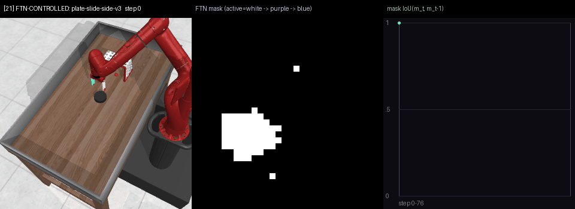
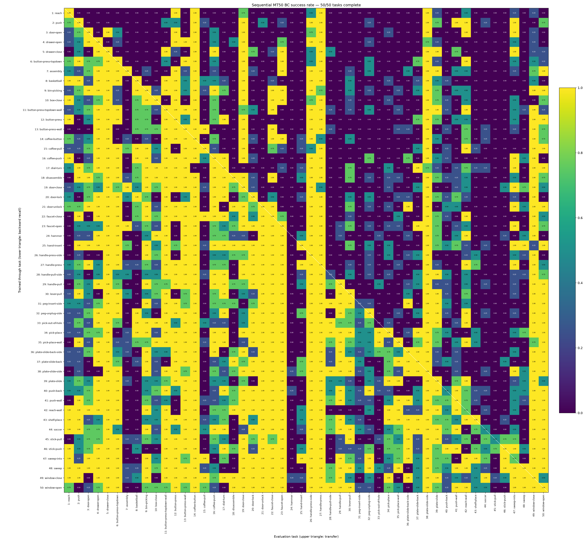

Cortical representations for robotic arm control
FTN learns a repertoire of robotic movements that can be retained, recovered, and assembled for different tasks.
The arm movements in the video are learned through behavior cloning: FTN learns to reproduce actions from demonstrations. All the robotics experiments shown here use this approach, with neural assemblies determining which learned components control the arm.
Learning the movements inside a task
To learn the movements shown in the video, demonstration trajectories are divided into short segments and pooled across tasks. FTN learns neural populations for these atomic movements. During training, neural recruitment optimization determines how the segments are functionally merged, split, and organized: related movements can recruit shared populations, while movements that require different control can recruit distinct ones.
Sequences of assemblies then produce longer actions: reaching, grasping, moving, and placing. In the recording, the learned policy controls the arm while replaying an assembly sequence recovered from a demonstration. The adjacent pane shows which population is active as the movement unfolds. This turns a collection of trajectories into composable motor control.
The plate-sliding example below includes an IoU chart measuring the overlap between consecutive segments’ active neural populations. High values mean that much of the same population remains active as the movement policy changes; lower values mark a larger change in recruitment. This illustrates the brain-inspired idea of smooth transitions between movement policies through overlapping neural populations.

Retaining skills across MT50
Meta-World’s MT50 suite contains 50 robotic manipulation tasks, including opening drawers, pressing buttons, inserting pegs, and moving objects. In a separate sequential behavior-cloning experiment, we train FTN on these tasks one after another and evaluate the entire suite after each task.
The matrix shows both retention and knowledge transfer. Each row is a stage of training; each column is a task being tested. Below the diagonal, the model returns to previously learned tasks. Above it, the model attempts tasks whose weights have not yet been trained.

Relatively early in training, many tasks above the diagonal already become possible. FTN uses examples of the new task to reconfigure a neural assembly from the components it has learned, without updating their weights. The developing repertoire therefore provides useful control for tasks beyond those already trained.